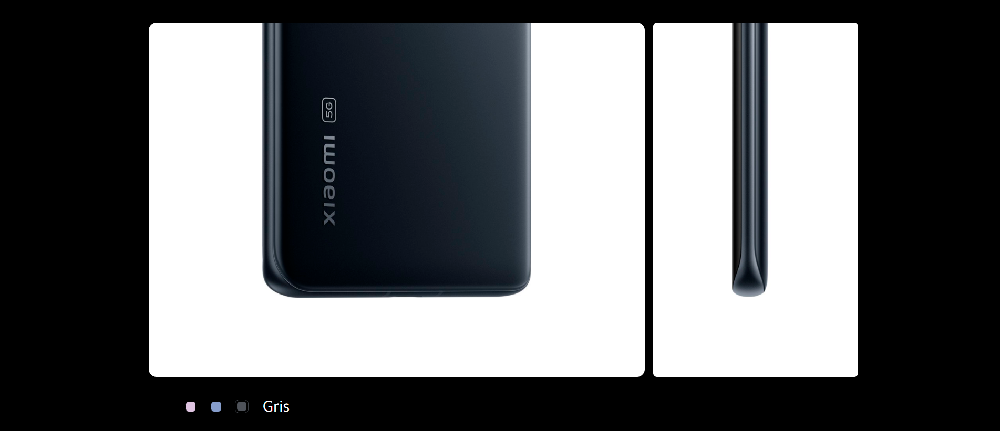
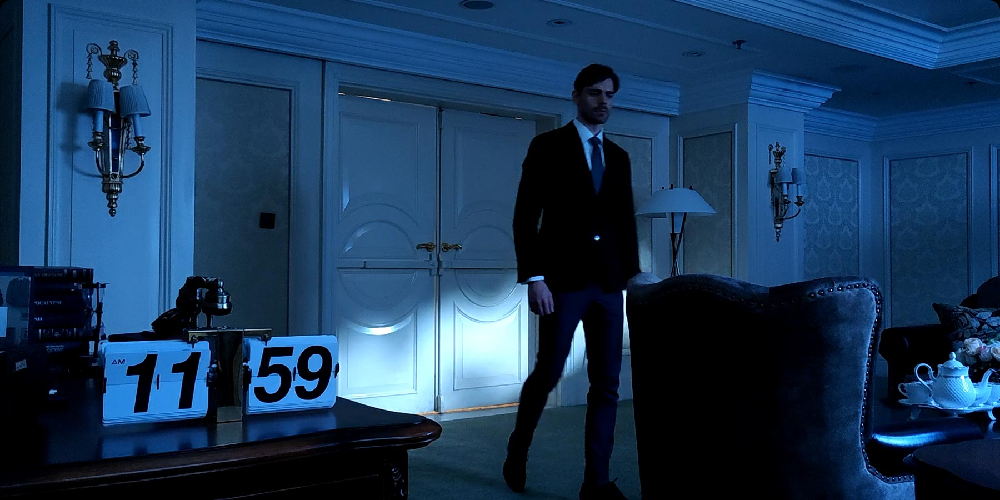

Con un peso de 180 g y una ancho de tan solo 69,9 mm, Xiaomi 12 ha sido diseñado con tecnología avanzada para proporcionar un agarre suave, uniforme y ligero. Agradable de sostener, hace que cada interacción sea una delicia.
Xiaomi 12 cuenta con una nueva tecnología de enfoque con algoritmo de seguimiento y aprendizaje de sujetos. Xiaomi ProFocus permite capturar sujetos en movimiento con mayor claridad.
Xiaomi 12 cuenta con una nueva tecnología de enfoque con algoritmo de seguimiento y aprendizaje de sujetos. Xiaomi ProFocus permite capturar sujetos en movimiento con mayor claridad.
Con la ayuda de algoritmos por IA y tecnología de imagen, el vídeo ilumina automáticamente la escena y captura más detalles que el ojo humano, incluso cuando se graba en la oscuridad, casi como si se añadiera un filtro de visión nocturna al teléfono.
